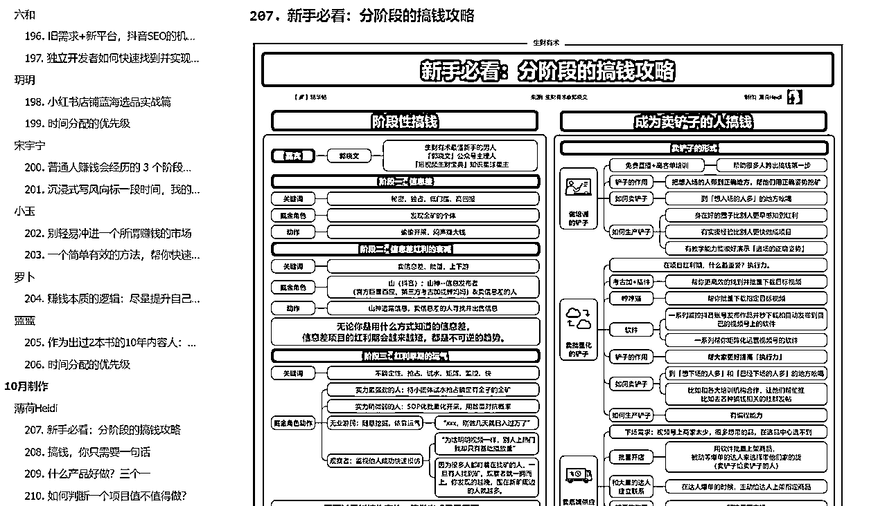

来源：https://dakhb269es.feishu.cn/docx/WVkSd6sI9owac1xMOGzcEpzPnhc
大家好，我是罗卜。
和许多圈友一样，我最初接触思维导图仅仅是出于个人兴趣和爱好。
我习惯于用它来做读书笔记，记录会议要点，甚至在团队中进行头脑风暴。
那时，我并没有意识到这项技能还能成为我赚钱的工具。
然而，随着时间的推移，我的看法发生了改变。
在阅读了无数的帖子后，我不敢自诩为专家，但我确实发现了许多关于思维导图的讨论。
无论是精华帖还是风向标，都有圈友提出利用思维导图来"破圈"、"引流"等策略。
自从生财会推出了思维导图航海特训之后，我注意到许多其他平台也开始重视这项技能，甚至将其作为重点推广。这让我感到非常欣慰，因为这意味着更多的人将因思维导图而受益。
这也是我选择在生财会持续分享思维导图的原因之一。
作为这项技能的受益者，我希望能够将这份收获传递给更多的人，特别是那些正在寻找项目，却还不确定自己想要做什么的人。
我建议他们从自己感兴趣的项目或精华帖开始，利用思维导图进行整理和拆解，以此来评估自己是否真的适合这个领域。我相信，通过这种方式，每个人都能找到最适合自己的道路。
去年418，我加入了生财这个大家庭。
直到7月底，我才真正开始被大家所注意。那是胖大魔组织研学社共读《亦仁益语》。
在5月的首次航海活动中，我输出了仅有的2-3张思维导图，并分享在了航海社群中。然而，这些分享并没有激起太大的波澜。
起初，我内心充满了恐惧。我害怕自己的思维导图会曲解原文的意思，担心读者在阅读后会受到误导。这种恐惧让我在分享时变得格外谨慎。
接着，是羞怯。我不敢充分表达自己，担心自己的作品会遭到他人的批评。甚至在分享的思维导图中，我连微信号和二维码都不敢留下，生怕说我在引流。
最后，我感到自己只是一个新人，一个小白。参加航海的都是行业大佬，我似乎没有什么值得分享的东西。我只好将自己看到的精华帖进行整理，然后再次分享出去。
但后来我意识到，这其实也是一种能力。整理能力、提炼能力、思维逻辑能力，以及输出表达能力，这些都是我在默默学习和实践中逐渐积累起来的。
我开始独自一边阅读精华帖，一边制作思维导图。我默默地阅读了许多精华帖，也制作了一些思维导图。虽然很多并没有转换成竖屏思维导图，也没有分享出去，但我认为这些都是我个人成长的宝贵练习。
我相信，每一次的尝试和练习，都是我成长道路上不可或缺的一部分。
我会继续坚持，不断学习，不断进步，直到有一天，我能够自信地站在大家面前，分享我的思考和见解。让我们一起在生财这个平台上，共同成长，共同进步。
此时我的竖屏思维导图技能并不是很成熟，甚至很多高级的技巧也不知道，在制作的同时也去搜索各种方法和技巧，直到遇到我的贵人胖大魔，邀请我参加【生财研学社】共读《亦仁益语》，开始也是作为共读人员，只需选择里面的帖子来分享，并没有考虑要做成竖屏导图去分享。
在我探索竖屏思维导图的旅途中，我必须承认，我的技能还远未达到炉火纯青的境界。
许多高级技巧对我来说还是一片未知领域。
在制作导图的过程中，我不断地寻找和学习各种方法和技巧，希望能够提升自己的能力。
就在我独自摸索的旅程中，我遇到了生命中的一位贵人——胖大魔。他向我伸出了橄榄枝，邀请我参加【生财研学社】的共读活动，一起研读《亦仁益语》。
最初，我作为共读人员参与其中，只需要挑选书中的精华帖子进行分享，并没有立即想到要将这些内容转化为竖屏导图的形式去分享。
但随着时间的推移，我开始意识到，将这些宝贵的知识以竖屏导图的形式呈现，不仅能够帮助我自己更好地理解和吸收，也能够让更多的人从中受益。这是一个自然而然的转变，也是我成长过程中的一个重要里程碑。
我感激胖大魔的邀请，感激【生财研学社】提供的平台，让我有机会与志同道合的朋友们一起学习和成长。
通过不断的学习和实践，我的竖屏思维导图技能将会越来越成熟，我也期待有一天能够以更加专业和自信的姿态，与大家分享我的成果和经验。
那段时间，我对竖屏思维导图的热爱正处在顶峰。我渴望在吸收了大家的分享后，能够尝试将这些知识转化为可视化的竖屏导图。
因此，我每天都会怀着期待的心情等待小伙伴们的分享，一旦他们分享完毕，我便立刻投入到导图的制作中。
我的初衷是争取在小伙伴分享结束后的2小时内完成导图的制作。然而，现实并不总是那么完美，有时我会遇到一些难题，需要工作到凌晨2点才能整理完毕。在这种情况下，我选择不在深夜分享，而是等到第二天一早再进行分享。
偶尔，我会感到非常疲惫，累到当天晚上几乎不想继续工作。但即便如此，我也会在第二天早上5点起床，继续我的整理工作，通常在8点左右就能完成。
在共读期间，我制作了21张思维导图，但私下里，我实际上制作了更多。
尤其是对于生财推出的小报童【生财有术项目精选】，我几乎将所有我想学习、想了解的内容都制作成了思维导图，尽管很多并没有分享出去，也没有转成竖屏思维导图。
在这个阶段，我更多的是在进行大量的练习，通过实践来尝试输出不同的竖屏思维导图技巧，对整个思维导图软件的功能也越来越熟练。
后来，我注意到在生财，大多数分享还是以文字为主，而以思维导图形式的分享并不多见。这让我意识到，我可以继续以这种形式分享，为生财带来一些不同的视角和价值。
通过持续的分享和实践，不仅能够提升自己的技能，也能够为生财的多样性和丰富性做出贡献。
当我在生财研学社的分享逐渐被更多生财人所了解和喜爱，我仿佛找到了一种与他人建立联系的新方式，特别是与那些大佬的交流。
这种经历对我来说，既是一份认可，也是一份激励。
参加过航海活动的朋友们都清楚，每次活动都有许多教练在航海群中通过图文或视频的形式进行直播分享。图文整理相对简单一些，只需按照分享的时间顺序进行整理，调整好格式即可。
然而，视频分享的难度则要高得多。这不仅需要全程聆听嘉宾的分享，而且由于分享的内容并不总是严格遵循既定框架，有时还会进行延伸分享，甚至加入一些实际案例，这无疑增加了整理的复杂性。尽管如此，对我而言，每一次的挑战都是一次宝贵的练习机会，每一次尝试都是自我提升的过程。
我珍视这些经历，因为它们不仅锻炼了我的整理能力、提炼能力和思维逻辑能力，还让我学会了如何更有效地表达和分享。我坚信，通过不断的学习和实践，我可以更好地服务于社区，为他人提供价值。
我将继续努力，不仅为了自己的成长，也为了能够与更多志同道合的人建立起深厚的联系。
在我完成一位教练的分享整理成思维导图后，我会怀着敬意和感激之情，在群里主动添加教练的微信。我会在添加请求中附上一条简短的备注，比如“听了教练的分享，做了一张思维导图想分享给您”，以此来表达我的诚意和对他们分享内容的尊重。
大多数时候，教练们都会通过我的好友请求。一旦通过，我会立刻将思维导图分享给他们。在分享之前，我总会先发送给自己，仔细检查导图的清晰度和完整性。然后，我会诚恳地征询教练的意见，询问他们是否觉得这张图有哪些地方需要改进或调整。
通过这样的方式，我在8月份的航海活动中，为许多教练的分享都制作了竖屏思维导图。我将这些导图作为对他们分享精神的回馈，同时也得到了他们的鼓励和支持。一些教练甚至主动帮我分享和传播，让我的导图能够被更多人看到。
有时，教练们会在航海群里特别@我，让我得到了更多圈友的关注和认可。这不仅让我感到非常荣幸，也激励我继续在这条道路上不断前行，为社区贡献自己的一份力量。
每一次的分享和反馈都是我成长的宝贵机会。将继续以这种真诚和开放的态度，与更多的嘉宾和圈友交流学习，共同创造更多的价值。
通过这样的经历，我深刻地认识到，链接与分享是一种强大的力量。
我们经常说，在能力尚未达到顶峰时，我们可以通过提供自己的技能和价值来与他人建立联系。
思维导图正是这样一种技能，它不仅能够帮助我们更好地理解和吸收信息，也能够作为一种媒介，让我们与他人建立更深层次的联系。
无论是整理教练的分享资料，还是制作思维导图，都是可以复制和推广的方法。整理资料的门槛并不高，许多工具都能够实现这一目标；而思维导图的整理则更具挑战性，尤其是竖屏思维导图。
我在生财的实践中证明了这一点，那么在其他社群，我相信同样的方法也能够取得成功。
如果你也愿意尝试用这种方式，在不同的社群中去实践和分享，我相信你一定会有意想不到的收获。每一份努力都可能带来新的机遇，每一次分享都可能开启新的可能。
勇敢地迈出这一步，用我们的技能和热情去影响和启发他人，共同期待那些美好的事情发生。
在航海家的分享会上，HEXIN教练提到了一个靠谱的人应具备的三种能力：“真诚，利他，会组局”。这些话深深地触动了我，让我意识到，尽管去年11月我才初次尝试组局，但这正是我成长的开始。
我开始认识到，即使我只是一个新人，也能通过自己的方式为他人提供价值。我的思维导图技能，虽然当时还不够成熟，但我已经意识到它是一种可以为他人带来帮助和启发的工具。无论在生财还是其他，都将尽我所能，用我的思维导图技能去分享、去启发、去连接更多的人。
我逐渐明白，真诚地分享自己的所学所感，以利他的心态去帮助他人，同时组织有意义的活动，这些都是建立信任和链接的重要方式。通过这样的实践，我不仅能够提升自己的能力，也能够在帮助他人的同时获得成长和认可。
正如稻盛和夫所说，“利他”的行为其实很简单，它不需要大张旗鼓，只需要我们先人后己，优先为他人考虑。这种精神不仅能够帮助我们建立良好的人际关系，也能够让我们在商业和生活中获得更长远的成功。
在经历了前两个阶段的积累和实践后，我深刻意识到复盘的重要性。虽然这个复盘可能不会特别深刻或引人注目，但它是我让自己被更多人看见的机会。在生财组织了30多场线下活动后，我观察到一个现象：许多人羞于留下任何文字，担心自己的优秀被人发现，以至于连几个字也不愿意留下，过于珍惜自己的文字。
然而，他们可能没有意识到，这个世界会给予那些敢于表达的人以红利。根据“1990法则”，1%的人是表达者，当你开始发声、传递内容时，你就已经获得了众多人的关注。持续分享，你就已经超越了99%的人。这不仅是一次自我反思和成长的过程，更是一种让自己在群体中脱颖而出的机会 。
通过复盘，可以从成功中总结方法，从失败中汲取教训，将个人的新鲜经验转化为团队的共识，从而实现从偶然到必然的转变 。这个过程不仅能帮助我们更好地理解过去的项目或事务，也能让我们在未来的工作中表现得更加出色。
鼓励每个人在完成每个阶段的工作后，都进行一次真诚的复盘。这不是为了向他人炫耀，而是为了自己和团队能够不断进步和成长。通过这样的方式，可以积累宝贵的信任资产，扩大我们的影响力，并最终实现个人和团队的共同发展 。
在我撰写这篇复盘文章后，评论区的一条留言给了我莫大的鼓舞，留言者是陈雪。尽管我之前还在探索阶段，尚未取得显著的成果，但陈雪的出现让我有机会尝试开展几场训练营，并赚回了数倍的生财门票费用。
当陈雪联系我时，我内心既忐忑又惶恐。作为一名生财的小透明，一位行业大佬突然加我微信，让我感到意外和不安，我不知道她想做什么。但随后我发现，她其实是想帮助我，她的出现让我在打造思维导图IP的道路上更进一步。
如果说胖大魔是发现并鼓励我发挥这项技能的人，那么陈雪就是将我推向另一个新高度的人。
在这一阶段，我意识到开设训练营的时机已经成熟。在训练营期间，我为未来组建团队制作航海导图积累了宝贵的团队成员。
这个过程不仅加深了我对自己能力的理解和信心，也让我学会了如何更有效地与他人沟通和协作。通过这些经历，我逐渐明白了如何成为一个能够“组局”的人，而不仅仅是一个参与者。
同时，我也认识到了真诚表达的重要性，无论是赞美还是批评，都应该出于内心，而不是仅仅为了取悦他人或避免冲突。
通过这些训练营和与陈雪的交流，我更加坚信了利他心态的价值。稻盛和夫曾提到，抱持利他之心，行利他之事，命运自然就会好转。保持真诚和利他的心态，能够在思维导图IP的道路上走得更远，也能为他人带来更多的价值。
在生财的一年多，已经有幸组织和参与了5-6次团队协作。每一次组队都是一次宝贵的学习和成长机会，让我深刻体会到团队精神和协作的力量。
第一次组队发生在去年8月，那时还像是一个临时搭建的草台班子，但正是这次经历，为我们后续的合作打下了基础在实践中学习，不断摸索着如何更有效地协同工作。
到了11月，迎来了第二次组队的机会，这一次是生财官方对我的信任和邀请。紧接着，我们又收到了第三次官方邀请，这无疑是对我们团队能力的进一步认可。
第四次组队是参加杭州的线下航海家大会，作为志愿者参与其中。这次活动是由左烨紫和小鹅邀请的，不仅是参与者，更是贡献者，为大会的成功举办贡献了自己的力量。
而最近一次组队，是一次共创活动，我和20多位位志同道合的小伙伴一起，目前已经共同创作了160张精华帖思维导图。这次共创不仅让我们的团队协作更加默契，也让我们的成果更加丰富和多元。
每一次组队，都是一次新的挑战，也是一次新的机遇。我真诚地感谢每一位团队成员的付出和努力，也感谢生财这个平台给予的机会和信任。只要保持开放的心态，持续学习和进步，我们的团队就能创造更多的价值，实现更高的目标。
在8月航海之旅的序幕缓缓拉开之际，在《亦仁益语》的共读中找到了灵感与共鸣。我看到了通过这种形式，我们能够在航海中绽放光彩，但同时我也清楚自己的能力尚有不足。
正是这份自知之明，促使我向生财研学社的伙伴们发出了诚挚的邀请，希望他们能加入我的行列，携手组成一个团队，共同对外展示我们的才华。
得益于他们的支持与合作，我们的竖屏思维导图不仅得到了大家的认可，我也因此得到了更多的关注。更令人欣喜的是，我们的团队还吸引了一些非常优秀的行业大佬，与他们的交流让我们受益匪浅。
在这段旅程中，我尽力为大家提供线上培训，分享操作技巧，引导每一位团队成员发挥自己的长处。我们集思广益，共同策划，将一张张竖屏思维导图推向航海社群。每一位参与其中的伙伴，不仅能够通过自己的竖屏思维导图在航海中留下印记，更能在这个过程中实现自我价值的提升。
这不仅是一次团队协作的胜利，更是每个人努力与才华的展现。
基于之前的组队经验和在思维导图领域的深耕，加之训练营的积累，我获得了生财官方的认可和邀请。当得知这一消息时，内心既有激动也有忐忑。
我深知自己的能力还有待提升，但正是这样的挑战让我成长。在11月和12月的航海制图中，得到了团队的大力协助，我们共同完成了制图任务，并为团队成员争取到了官方的奖励，这是对我们努力的肯定和鼓励。
另一次难忘的邀请是参加生财航海家的线下活动，这次是由左烨紫和小鹅发起的。那时，我还并非航海家的一员，也没有报名参加线下活动。但在小鹅他们的协助下，他们整理了分享的文字版，而我则与团队成员一起，将这些内容转化为竖屏思维导图版，这不仅是一种内容的呈现，更是我们团队协作精神的体现。
这些经历让我更加坚信，无论面对怎样的挑战，只要我们团结一心，就能共创佳绩。每一步的成长都离不开团队的支持与协作，是每一个人的共同努力，让我们能够在生财的舞台上发光发热。
因为被邀请，又和小伙伴一起协同，每一次的收获都不同，每一次都在为下一次做准备，所有后面有这样的制图邀请，无论是公益还是付费的，都能和大家协同作战，也让我积累了线上稳定的团队。
小伙伴在我的鼓励和支持下，也在一点点成长，现在做图水平基本上都能独当一面。
因为得到了邀请，并且能与一群出色的小伙伴们携手合作，每一次的经历都赋予了我不同的收获。这些宝贵的经验，不仅丰富了我的个人技能，也为未来的挑战打下了坚实的基础。我坚信，每一次的参与都是为下一次的飞跃做准备。
在我的鼓励和支持下，他们不仅在思维导图的制作上取得了显著进步，而且现在已经能够独当一面，展现出了令人钦佩的专业水平。这让我感到无比自豪和欣慰。
现在，无论是公益性质的制图邀请，还是带有报酬的项目，都能与团队成员协同作战，共同完成任务。这不仅让我们的合作更加默契，也使我积累了一个线上稳定、高效的团队。
始终相信，团队的力量是无穷的。只要我们团结一心，相互支持，就能克服一切困难，创造出更多的可能。在未来的日子里，我期待与我的团队成员们一起，继续在思维导图的世界里探索、成长，共同绘制出更加精彩的篇章。
还记得在生财第一次组织线下分享会，专注于竖屏思维导图的展示与讨论，这不仅是一次全新的尝试，更是我组局和分享旅程的起点。这次经历让我深刻感受到，组局对我而言，不只是与不同圈友的相遇，更是一次次宝贵的自我锻炼和成长机会。
在这次分享局中，我有幸遇见学习过竖屏思维导图的圈友。他们带来了丰富的案例，分享了思维导图在生活和工作中的应用，这些实际经验的交流让我们对思维导图的理解更加深入，也启发了我对这一工具的更多可能性。
还探讨了如何利用思维导图进行自我介绍，寻找个人定位的方法。这种创新的自我介绍方式，不仅让每个人的故事更加生动、形象，也帮助我们更好地认识自己，发掘自身的独特价值。
这次组局经历，让我更加坚信，每一次的分享和交流，都是个人能力提升的催化剂。
在我还未加入航海家之前，我的线下聚会就经常出现龙珠圈友和航海家成员。每一次与他们的不期而遇，都给我带来了莫大的惊喜。在这些聚会中，我们不仅分享了彼此的生财故事，还交流了许多新颖的思路和创意玩法，这种深刻的体验是线上聊天所无法提供的。
记得那次我发起了一次关于思维导图变现的分享会，当我看到七小不仅报名参加，还是第一个加入的，我的心中充满了难以抑制的喜悦。但与此同时，我也感到一丝焦虑，担心自己的分享不够精彩，害怕在业界大佬面前出糗。
然而，在活动进行中，七小不仅为我们的聚会增添了光彩，更是以其独到的见解和经验，提升了整个活动的质量。我从七小那里学到了许多宝贵的知识，这些经验对我来说是无价的，让我在思维导图的创作旅程中避免了许多潜在的陷阱。
通过这些经历，深刻地认识到，组局的意义远远超出了遇见谁的问题。如果你不主动去组织，去尝试，那么你永远不会知道将会遇见怎样的人，收获怎样的故事。
因此，我开始更加积极地组织聚会，享受每一次与大家在线下的深入交流和分享。每一次的组局都是一次新的探索，一次心灵的碰撞
截至目前，我有幸在生财组织了32次小型聚会，每次都控制在10人以内，以确保每位参与者都有足够的空间和时间进行深入交流。
每次聚会，我们都会投入超过3小时的时间，在这个过程中，我们毫无保留地分享彼此的知识和经验，我见证了许多圈友在这些聚会中勇敢地迈出了他们的第一步。
我深知，在线下聚会中，每一位参与者的时间都是极其宝贵的。
因此，我总是努力确保每一次的聚会都能让大家有所收获，让大家带着满满的干货回家。这些干货可能不会直接告诉你去执行哪个具体的项目，但它们是构建成功之路的基石——一些基础而重要的认知。
要想在任何领域取得进步，要打破旧有的认知局限，勇敢突破自我。在这个基础上，再去探索更多的可能。我鼓励每一位参与的小伙伴不仅要在聚会中学习，更要去实践，去展示自己的才华，甚至去组织自己的聚会。
希望通过这些聚会，让大家感受到自己的行动是有价值的，是充满意义的。
纳瓦尔说：如果社会可以培训你，那么社会也可以培训他人来取代你。大家都能学会的东西是不可能让你致富的。凡是可以批量化培训的技能都是能够被雇佣的技能。只有你自己学到的东西，才是属于你独有的能力，才有可能让你创业成功。
前几个月在帖子区，我陆续发表了几篇关于思维导图整理的帖子。这些帖子的内容涵盖了从如何理解生财的概念，到如何将这些理念应用于实践中，再到我们共同创造的那些精华帖思维导图。在这个过程中，细心的朋友们可能已经注意到，我制作的导图数量在逐渐减少，而其他圈友贡献的导图却在不断增多。
我深知，每个人的经验和时间都是非常宝贵的。要独立创作数百张高质量的竖屏思维导图，是一项极具挑战性的任务。正是出于这样的考虑，我发起了共创计划，邀请每一位愿意参与的小伙伴加入，共同完成这项工作。我希望通过这种方式，不仅能够让每个人都在共创的过程中获得成长，还能帮助大家突破自我限制，被更多人看见，让他们的竖屏思维导图作品得到更广泛的传播。
共创不仅是一种工作模式，它更是一种精神，一种让每个人都能在分享和学习中找到自己位置的精神。我期待通过我们的共同努力，让这些思维导图成为连接知识与实践的桥梁，帮助更多人实现自己的目标和梦想。让我们一起探索思维导图的无限可能，让它成为我们共同成长的见证。

我们都知道，在生财的精华贴已经是被筛选出来，没有被精华，也不一定就不优质，其实每一篇都有它的价值，看完后也会有启发和思考。
易操作，顾名思义，选这篇帖是大部分人看完后能够看明白，那通过思维导图的制作，也是更好的展示，同样也是为了让阅读者更好的理解并可以快速的去实战。
普通化，不是说内容的普通话，是这个帖子的项目很普通，很平常，当然也可能被大家忽视，这类恰恰是可以长期被看见，也能被大家轻易学习，并快速跑通闭环。
周期性，这类精华贴，是会在每年某个特殊的时间被人翻出来，如七夕卖花，年底的红包封面等，当然还有很多地域性的项目。
当你还没有合适的项目和技能的时候，可以去学习一门技能，这么技能虽不能直接给你变现，但这个技能可以给你带来很多思考和提升。
用思维导图去拆解每一个你想了解的项目，通过思维导图的拆解，去延伸思考，去脑暴，在阅读的时候用思维导图进一步理解该贴，做好帖子思维导图后，还能助你链接写贴的大佬。
当然思维导图不仅仅可以用在生财，也可以用在你自己所在的领域，做复盘，做SOP，做会议记录，做账号拆解等。
我是罗卜，在生财因思维导图被大家所熟悉，也期望通过思维导图帮助更多人。
以上是我个人在这个过程中的一些心得。
罗卜与19位伙伴:共创81张思维导图的成果展示【往期思维导图分享】